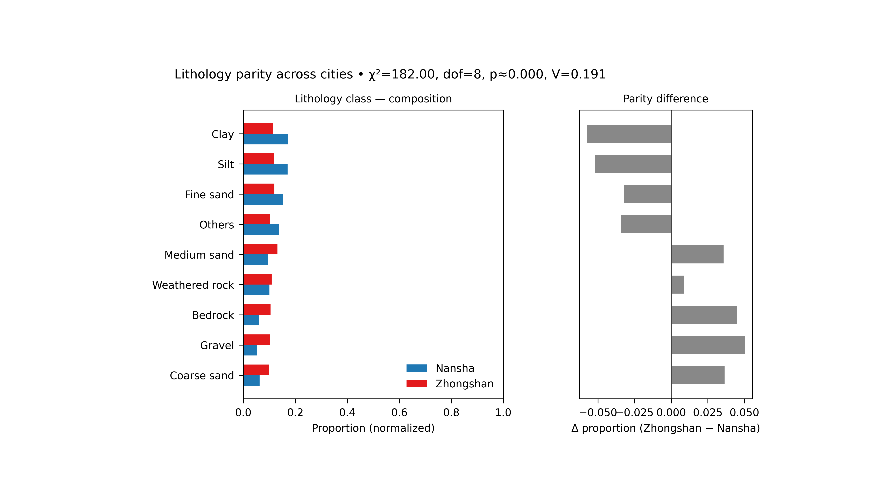

Note
Go to the end to download the full example code.
Lithology parity: comparing the geological composition of the two cities#
This example teaches you how to read the GeoPrior lithology parity figure.
Before comparing forecasts, uncertainty, or physics fields between two cities, it is useful to ask a simpler question:
Are the two cities compositionally similar in their lithology mix, or are they built from meaningfully different geological proportions?
That is what the lithology-parity figure is for.
What the figure shows#
The real plotting backend builds a two-panel figure.
Left panel#
Normalized composition bars for Nansha and Zhongshan across the selected lithology classes.
Right panel#
Difference bars showing:
for each class.
The title line also reports a simple association test:
\(\chi^2\)
degrees of freedom
approximate p-value
Cramér’s \(V\)
Why this matters#
A city-to-city model comparison can be misleading if the two cities differ strongly in their underlying material composition.
This figure helps the reader see:
which classes dominate each city,
whether the differences are broad or localized,
whether the overall composition gap is small or large,
and whether “other” categories should be grouped for a cleaner comparison.
This gallery page creates two compact synthetic city tables so the example is fully executable during the documentation build.
Imports#
We use the real helper functions from the existing script:
compute_proportions(…)
draw_lithology_parity(…)
That keeps the gallery page aligned with the real figure logic.
from __future__ import annotations
import tempfile
from pathlib import Path
import matplotlib.image as mpimg
import matplotlib.pyplot as plt
import numpy as np
import pandas as pd
from geoprior._scripts.plot_litho_parity import (
chisq_cramers_v,
compute_proportions,
draw_lithology_parity,
)
Step 1 - Build two synthetic city datasets#
The real script reads one CSV per city and then counts the
selected categorical column, which defaults to
lithology_class.
For a teaching page, we create two small synthetic datasets with overlapping but not identical lithology compositions.
rng = np.random.default_rng(8)
classes = [
"Clay",
"Silt",
"Fine sand",
"Medium sand",
"Coarse sand",
"Gravel",
"Weathered rock",
"Bedrock",
"Peat",
"Fill",
]
# Nansha: more soft sediments and fill.
p_ns = np.array(
[0.19, 0.16, 0.15, 0.10, 0.07, 0.05, 0.09, 0.06, 0.05, 0.08]
)
# Zhongshan: slightly more coarse and rocky material.
p_zh = np.array(
[0.12, 0.12, 0.13, 0.12, 0.10, 0.09, 0.12, 0.11, 0.03, 0.06]
)
n_ns = 2600
n_zh = 2400
ns = pd.DataFrame(
{
"year": rng.choice(
[2021, 2022, 2023],
size=n_ns,
p=[0.25, 0.40, 0.35],
),
"lithology_class": rng.choice(
classes,
size=n_ns,
p=p_ns,
),
}
)
zh = pd.DataFrame(
{
"year": rng.choice(
[2021, 2022, 2023],
size=n_zh,
p=[0.22, 0.43, 0.35],
),
"lithology_class": rng.choice(
classes,
size=n_zh,
p=p_zh,
),
}
)
print("Synthetic dataset sizes")
print(f" Nansha: {len(ns)}")
print(f" Zhongshan: {len(zh)}")
Synthetic dataset sizes
Nansha: 2600
Zhongshan: 2400
Step 2 - Select the comparison setup#
The real script supports:
a target categorical column,
optional year filtering,
top_n class selection,
optional grouping of the rest into “Others”.
Here we keep all years together and ask for the 8 most common
classes, with the remainder grouped as Others.
col = "lithology_class"
top_n = 8
group_others = True
dfp, core_classes, counts_mat = compute_proportions(
ns,
zh,
col=col,
top_n=top_n,
group_others=group_others,
)
print("")
print("Proportion table preview")
print(dfp.head(10).to_string(index=False))
Proportion table preview
class city proportion
Coarse sand Nansha 0.062692
Coarse sand Zhongshan 0.099167
Gravel Nansha 0.052308
Gravel Zhongshan 0.102500
Bedrock Nansha 0.060000
Bedrock Zhongshan 0.105000
Weathered rock Nansha 0.100385
Weathered rock Zhongshan 0.109167
Medium sand Nansha 0.095385
Medium sand Zhongshan 0.131250
Step 3 - Read the association statistics directly#
The real figure title includes the results of the 2×K composition test. We compute them here before plotting so the reader sees what those summary numbers mean.
chi2, pval, dof, cv = chisq_cramers_v(counts_mat)
print("")
print("Parity statistics")
print(f" chi2 = {chi2:.4f}")
print(f" dof = {dof}")
print(f" p-value = {pval:.4f}")
print(f" Cramer'sV = {cv:.4f}")
Parity statistics
chi2 = 181.9989
dof = 8
p-value = 0.0000
Cramer'sV = 0.1908
Step 4 - Render the real figure#
The real plotting helper only needs:
the proportion table,
the 2×K count matrix,
the column name,
the output path,
and whether the two panels should share the y axis.
It does not accept the generic plot text controls used by some of the other scripts, so we keep this call minimal and exact.
tmp_dir = Path(
tempfile.mkdtemp(prefix="gp_sg_litho_par_")
)
out_base = tmp_dir / "lithology_parity_gallery"
draw_lithology_parity(
dfp,
counts_mat,
col=col,
outpath=out_base,
sharey=True,
)
[OK] Wrote C:\Users\Daniel\AppData\Local\Temp\gp_sg_litho_par_2b7o2ey6\lithology_parity_gallery.png/.svg
Step 5 - Show the actual PNG produced by the backend#
The real helper writes PNG and SVG. For the gallery page, we display the PNG result directly.
img = mpimg.imread(str(out_base) + ".png")
fig, ax = plt.subplots(figsize=(8.2, 4.6))
ax.imshow(img)
ax.axis("off")

(np.float64(-0.5), np.float64(4000.5), np.float64(2454.5), np.float64(-0.5))
Step 6 - Quantify the largest class differences#
The right-hand panel shows:
proportion(Zhongshan) - proportion(Nansha)
Let us compute those differences explicitly so the figure and the numbers tell the same story.
classes_order = list(dfp["class"].cat.categories)
ns_props = []
zh_props = []
for cls in classes_order:
m_ns = (dfp["class"] == cls) & (dfp["city"] == "Nansha")
m_zh = (dfp["class"] == cls) & (dfp["city"] == "Zhongshan")
ns_props.append(
float(dfp.loc[m_ns, "proportion"].iloc[0])
if m_ns.any()
else 0.0
)
zh_props.append(
float(dfp.loc[m_zh, "proportion"].iloc[0])
if m_zh.any()
else 0.0
)
diff_df = pd.DataFrame(
{
"class": classes_order,
"delta_prop": np.asarray(zh_props) - np.asarray(ns_props),
}
).sort_values("delta_prop", ascending=False)
print("")
print("Largest positive differences (Zhongshan - Nansha)")
print(diff_df.head(5).to_string(index=False))
print("")
print("Largest negative differences (Zhongshan - Nansha)")
print(diff_df.tail(5).to_string(index=False))
Largest positive differences (Zhongshan - Nansha)
class delta_prop
Gravel 0.050192
Bedrock 0.045000
Coarse sand 0.036474
Medium sand 0.035865
Weathered rock 0.008782
Largest negative differences (Zhongshan - Nansha)
class delta_prop
Weathered rock 0.008782
Fine sand -0.032372
Others -0.034423
Silt -0.052083
Clay -0.057436
Step 7 - Learn how to read the left panel#
The left panel is the composition panel.
It shows the normalized proportions for the two cities, not raw counts. That matters because the two datasets do not need to have exactly the same number of rows.
A useful reading order is:
identify the largest bars in each city,
see which classes are dominant in both cities,
check whether the same top classes appear in roughly the same order.
If the two composition profiles are broadly similar, then later differences in model behavior are less likely to be explained only by a gross mismatch in lithology mix.
Step 8 - Learn how to read the right panel#
The right panel is the parity-difference panel.
Positive bars mean:
Zhongshan has a larger proportion than Nansha
Negative bars mean:
Nansha has a larger proportion than Zhongshan
This panel is often easier to interpret than the left one when the reader wants to know:
“Which lithology classes are really driving the city-to-city difference?”
It turns a two-profile comparison into a direct signed contrast.
Step 9 - Learn how to read the title statistics#
The figure title includes chi-square style association information:
chi2
dof
p
Cramer’s V
The most intuitive one here is often Cramer’s V.
It is an effect-size style measure for the overall difference in composition. A larger value means the two cities differ more strongly in their categorical makeup.
So the title tells you not only where the bars differ, but also whether the overall composition gap is weak or strong.
Step 10 - Practical takeaway#
This figure is useful because it gives a fast geological context page before deeper model comparisons.
It helps answer:
are the two cities compositionally similar?
which classes differ the most?
is the overall difference mild or substantial?
In practice, this makes the later forecasting and physics figures easier to interpret, because the reader has already seen whether the two cities start from similar or different lithological foundations.
Command-line version#
The same figure can be produced from the command line.
The real script supports:
--srcfor the dataset directory,--ns-fileand--zh-filefor the two CSV files,city flags (which must resolve to both Nansha and Zhongshan),
--colfor the categorical column,--yearfor optional filtering,--sample-fracor--sample-n,--top-n,--group-others,--sharey,and
--out.
Legacy dispatcher:
python -m scripts plot-litho-parity \
--src data/final_dataset \
-ns -zh \
--col lithology_class \
--year all \
--top-n 8 \
--group-others true \
--sharey true \
--out figS1_lithology_parity
Year-specific comparison:
python -m scripts plot-litho-parity \
--src data/final_dataset \
-ns -zh \
--col lithology_class \
--year 2022 \
--sample-n 5000 \
--out figS1_lithology_parity_2022
Modern CLI:
geoprior plot litho-parity \
--src data/final_dataset \
-ns -zh \
--col lithology_class \
--out figS1_lithology_parity
The gallery page teaches the figure. The command line reproduces it in a workflow.
Total running time of the script: (0 minutes 6.949 seconds)